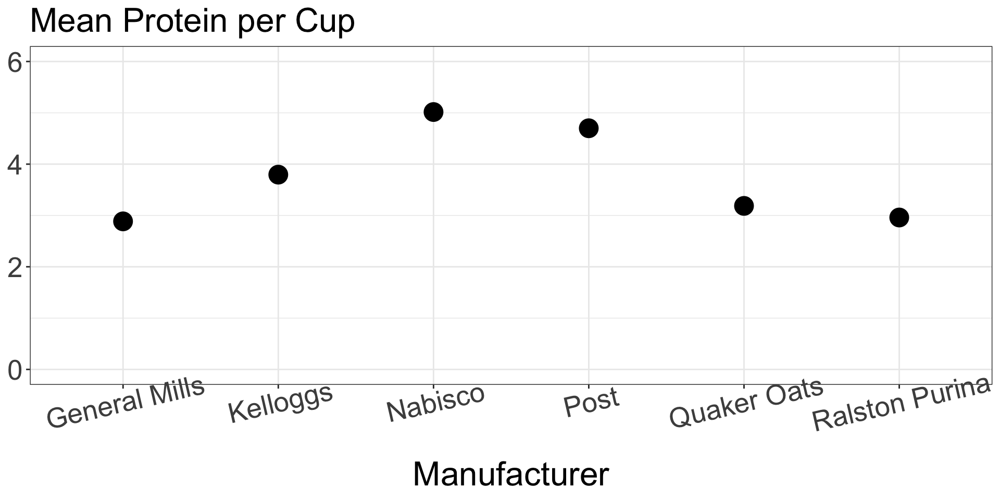

Data Cleaning & Manipulation
Thursday, April 17
Today we will…
- New Material
- Extend
dplyrverbs to have more functionality. - Discuss data ethics.
- Extend
- Lab 3: Teacher Evaluations
Extending dplyr verbs
Reminder: Example Data Cereal
| name | manuf | type | calories | protein | fat | sodium | fiber | carbo | sugars | potass | vitamins | shelf | weight | cups | rating |
|---|---|---|---|---|---|---|---|---|---|---|---|---|---|---|---|
| 100% Bran | N | cold | 70 | 4 | 1 | 130 | 10 | 5 | 6 | 280 | 25 | 3 | 1 | 0.33 | 68.40297 |
| 100% Natural Bran | Q | cold | 120 | 3 | 5 | 15 | 2 | 8 | 8 | 135 | 0 | 3 | 1 | 1.00 | 33.98368 |
| All-Bran | K | cold | 70 | 4 | 1 | 260 | 9 | 7 | 5 | 320 | 25 | 3 | 1 | 0.33 | 59.42551 |
| All-Bran with Extra Fiber | K | cold | 50 | 4 | 0 | 140 | 14 | 8 | 0 | 330 | 25 | 3 | 1 | 0.50 | 93.70491 |
| Almond Delight | R | cold | 110 | 2 | 2 | 200 | 1 | 14 | 8 | -1 | 25 | 3 | 1 | 0.75 | 34.38484 |
More dplyr
We have already covered a lot, but not everything you might want…
Today we will cover functions that help with the following tasks:
- extract a variable as a vector
- simple frequency table of a categorical variable
- creating a categorical variable from levels of a quantitatie variable
- applying slice to groups and multiple variables
- mutating or summarizing many variables at once
pull()
What is the mean potassium for cold cereals?
- You can’t use the
$operator in a pipeline pull()to the rescue!pull()extracts a data frame column as a vector
Reminder: count with summarize()
How many cereals does each manuf have in this dataset?
Count with count()
How many cereals does each manuf have in this dataset?
if_else()
For each cereal, label the potass as “high” or “low”.
One if-else statement:
if_else(<CONDITION>, <TRUE OUTPUT>, <FALSE OUTPUT>)
| name | manuf | type | calories | protein | fat | sodium | fiber | carbo | sugars | potass | po_category | vitamins | shelf | weight | cups | rating |
|---|---|---|---|---|---|---|---|---|---|---|---|---|---|---|---|---|
| 100% Bran | N | cold | 70 | 4 | 1 | 130 | 10.0 | 5.0 | 6 | 280 | high | 25 | 3 | 1.00 | 0.33 | 68.40297 |
| 100% Natural Bran | Q | cold | 120 | 3 | 5 | 15 | 2.0 | 8.0 | 8 | 135 | high | 0 | 3 | 1.00 | 1.00 | 33.98368 |
| All-Bran | K | cold | 70 | 4 | 1 | 260 | 9.0 | 7.0 | 5 | 320 | high | 25 | 3 | 1.00 | 0.33 | 59.42551 |
| All-Bran with Extra Fiber | K | cold | 50 | 4 | 0 | 140 | 14.0 | 8.0 | 0 | 330 | high | 25 | 3 | 1.00 | 0.50 | 93.70491 |
| Almond Delight | R | cold | 110 | 2 | 2 | 200 | 1.0 | 14.0 | 8 | -1 | low | 25 | 3 | 1.00 | 0.75 | 34.38484 |
| Apple Cinnamon Cheerios | G | cold | 110 | 2 | 2 | 180 | 1.5 | 10.5 | 10 | 70 | low | 25 | 1 | 1.00 | 0.75 | 29.50954 |
| Apple Jacks | K | cold | 110 | 2 | 0 | 125 | 1.0 | 11.0 | 14 | 30 | low | 25 | 2 | 1.00 | 1.00 | 33.17409 |
| Basic 4 | G | cold | 130 | 3 | 2 | 210 | 2.0 | 18.0 | 8 | 100 | low | 25 | 3 | 1.33 | 0.75 | 37.03856 |
| Bran Chex | R | cold | 90 | 2 | 1 | 200 | 4.0 | 15.0 | 6 | 125 | high | 25 | 1 | 1.00 | 0.67 | 49.12025 |
| Bran Flakes | P | cold | 90 | 3 | 0 | 210 | 5.0 | 13.0 | 5 | 190 | high | 25 | 3 | 1.00 | 0.67 | 53.31381 |
| Cap'n'Crunch | Q | cold | 120 | 1 | 2 | 220 | 0.0 | 12.0 | 12 | 35 | low | 25 | 2 | 1.00 | 0.75 | 18.04285 |
| Cheerios | G | cold | 110 | 6 | 2 | 290 | 2.0 | 17.0 | 1 | 105 | high | 25 | 1 | 1.00 | 1.25 | 50.76500 |
| Cinnamon Toast Crunch | G | cold | 120 | 1 | 3 | 210 | 0.0 | 13.0 | 9 | 45 | low | 25 | 2 | 1.00 | 0.75 | 19.82357 |
| Clusters | G | cold | 110 | 3 | 2 | 140 | 2.0 | 13.0 | 7 | 105 | high | 25 | 3 | 1.00 | 0.50 | 40.40021 |
| Cocoa Puffs | G | cold | 110 | 1 | 1 | 180 | 0.0 | 12.0 | 13 | 55 | low | 25 | 2 | 1.00 | 1.00 | 22.73645 |
| Corn Chex | R | cold | 110 | 2 | 0 | 280 | 0.0 | 22.0 | 3 | 25 | low | 25 | 1 | 1.00 | 1.00 | 41.44502 |
| Corn Flakes | K | cold | 100 | 2 | 0 | 290 | 1.0 | 21.0 | 2 | 35 | low | 25 | 1 | 1.00 | 1.00 | 45.86332 |
| Corn Pops | K | cold | 110 | 1 | 0 | 90 | 1.0 | 13.0 | 12 | 20 | low | 25 | 2 | 1.00 | 1.00 | 35.78279 |
| Count Chocula | G | cold | 110 | 1 | 1 | 180 | 0.0 | 12.0 | 13 | 65 | low | 25 | 2 | 1.00 | 1.00 | 22.39651 |
| Cracklin' Oat Bran | K | cold | 110 | 3 | 3 | 140 | 4.0 | 10.0 | 7 | 160 | high | 25 | 3 | 1.00 | 0.50 | 40.44877 |
| Cream of Wheat (Quick) | N | hot | 100 | 3 | 0 | 80 | 1.0 | 21.0 | 0 | -1 | low | 0 | 2 | 1.00 | 1.00 | 64.53382 |
| Crispix | K | cold | 110 | 2 | 0 | 220 | 1.0 | 21.0 | 3 | 30 | low | 25 | 3 | 1.00 | 1.00 | 46.89564 |
| Crispy Wheat & Raisins | G | cold | 100 | 2 | 1 | 140 | 2.0 | 11.0 | 10 | 120 | high | 25 | 3 | 1.00 | 0.75 | 36.17620 |
| Double Chex | R | cold | 100 | 2 | 0 | 190 | 1.0 | 18.0 | 5 | 80 | low | 25 | 3 | 1.00 | 0.75 | 44.33086 |
| Froot Loops | K | cold | 110 | 2 | 1 | 125 | 1.0 | 11.0 | 13 | 30 | low | 25 | 2 | 1.00 | 1.00 | 32.20758 |
| Frosted Flakes | K | cold | 110 | 1 | 0 | 200 | 1.0 | 14.0 | 11 | 25 | low | 25 | 1 | 1.00 | 0.75 | 31.43597 |
| Frosted Mini-Wheats | K | cold | 100 | 3 | 0 | 0 | 3.0 | 14.0 | 7 | 100 | low | 25 | 2 | 1.00 | 0.80 | 58.34514 |
| Fruit & Fibre Dates; Walnuts; and Oats | P | cold | 120 | 3 | 2 | 160 | 5.0 | 12.0 | 10 | 200 | high | 25 | 3 | 1.25 | 0.67 | 40.91705 |
| Fruitful Bran | K | cold | 120 | 3 | 0 | 240 | 5.0 | 14.0 | 12 | 190 | high | 25 | 3 | 1.33 | 0.67 | 41.01549 |
| Fruity Pebbles | P | cold | 110 | 1 | 1 | 135 | 0.0 | 13.0 | 12 | 25 | low | 25 | 2 | 1.00 | 0.75 | 28.02576 |
| Golden Crisp | P | cold | 100 | 2 | 0 | 45 | 0.0 | 11.0 | 15 | 40 | low | 25 | 1 | 1.00 | 0.88 | 35.25244 |
| Golden Grahams | G | cold | 110 | 1 | 1 | 280 | 0.0 | 15.0 | 9 | 45 | low | 25 | 2 | 1.00 | 0.75 | 23.80404 |
| Grape Nuts Flakes | P | cold | 100 | 3 | 1 | 140 | 3.0 | 15.0 | 5 | 85 | low | 25 | 3 | 1.00 | 0.88 | 52.07690 |
| Grape-Nuts | P | cold | 110 | 3 | 0 | 170 | 3.0 | 17.0 | 3 | 90 | low | 25 | 3 | 1.00 | 0.25 | 53.37101 |
| Great Grains Pecan | P | cold | 120 | 3 | 3 | 75 | 3.0 | 13.0 | 4 | 100 | low | 25 | 3 | 1.00 | 0.33 | 45.81172 |
| Honey Graham Ohs | Q | cold | 120 | 1 | 2 | 220 | 1.0 | 12.0 | 11 | 45 | low | 25 | 2 | 1.00 | 1.00 | 21.87129 |
| Honey Nut Cheerios | G | cold | 110 | 3 | 1 | 250 | 1.5 | 11.5 | 10 | 90 | low | 25 | 1 | 1.00 | 0.75 | 31.07222 |
| Honey-comb | P | cold | 110 | 1 | 0 | 180 | 0.0 | 14.0 | 11 | 35 | low | 25 | 1 | 1.00 | 1.33 | 28.74241 |
| Just Right Crunchy Nuggets | K | cold | 110 | 2 | 1 | 170 | 1.0 | 17.0 | 6 | 60 | low | 100 | 3 | 1.00 | 1.00 | 36.52368 |
| Just Right Fruit & Nut | K | cold | 140 | 3 | 1 | 170 | 2.0 | 20.0 | 9 | 95 | low | 100 | 3 | 1.30 | 0.75 | 36.47151 |
| Kix | G | cold | 110 | 2 | 1 | 260 | 0.0 | 21.0 | 3 | 40 | low | 25 | 2 | 1.00 | 1.50 | 39.24111 |
| Life | Q | cold | 100 | 4 | 2 | 150 | 2.0 | 12.0 | 6 | 95 | low | 25 | 2 | 1.00 | 0.67 | 45.32807 |
| Lucky Charms | G | cold | 110 | 2 | 1 | 180 | 0.0 | 12.0 | 12 | 55 | low | 25 | 2 | 1.00 | 1.00 | 26.73451 |
| Maypo | A | hot | 100 | 4 | 1 | 0 | 0.0 | 16.0 | 3 | 95 | low | 25 | 2 | 1.00 | 1.00 | 54.85092 |
| Muesli Raisins; Dates; & Almonds | R | cold | 150 | 4 | 3 | 95 | 3.0 | 16.0 | 11 | 170 | high | 25 | 3 | 1.00 | 1.00 | 37.13686 |
| Muesli Raisins; Peaches; & Pecans | R | cold | 150 | 4 | 3 | 150 | 3.0 | 16.0 | 11 | 170 | high | 25 | 3 | 1.00 | 1.00 | 34.13976 |
| Mueslix Crispy Blend | K | cold | 160 | 3 | 2 | 150 | 3.0 | 17.0 | 13 | 160 | high | 25 | 3 | 1.50 | 0.67 | 30.31335 |
| Multi-Grain Cheerios | G | cold | 100 | 2 | 1 | 220 | 2.0 | 15.0 | 6 | 90 | low | 25 | 1 | 1.00 | 1.00 | 40.10596 |
| Nut&Honey Crunch | K | cold | 120 | 2 | 1 | 190 | 0.0 | 15.0 | 9 | 40 | low | 25 | 2 | 1.00 | 0.67 | 29.92429 |
| Nutri-Grain Almond-Raisin | K | cold | 140 | 3 | 2 | 220 | 3.0 | 21.0 | 7 | 130 | high | 25 | 3 | 1.33 | 0.67 | 40.69232 |
| Nutri-grain Wheat | K | cold | 90 | 3 | 0 | 170 | 3.0 | 18.0 | 2 | 90 | low | 25 | 3 | 1.00 | 1.00 | 59.64284 |
| Oatmeal Raisin Crisp | G | cold | 130 | 3 | 2 | 170 | 1.5 | 13.5 | 10 | 120 | high | 25 | 3 | 1.25 | 0.50 | 30.45084 |
| Post Nat. Raisin Bran | P | cold | 120 | 3 | 1 | 200 | 6.0 | 11.0 | 14 | 260 | high | 25 | 3 | 1.33 | 0.67 | 37.84059 |
| Product 19 | K | cold | 100 | 3 | 0 | 320 | 1.0 | 20.0 | 3 | 45 | low | 100 | 3 | 1.00 | 1.00 | 41.50354 |
| Puffed Rice | Q | cold | 50 | 1 | 0 | 0 | 0.0 | 13.0 | 0 | 15 | low | 0 | 3 | 0.50 | 1.00 | 60.75611 |
| Puffed Wheat | Q | cold | 50 | 2 | 0 | 0 | 1.0 | 10.0 | 0 | 50 | low | 0 | 3 | 0.50 | 1.00 | 63.00565 |
| Quaker Oat Squares | Q | cold | 100 | 4 | 1 | 135 | 2.0 | 14.0 | 6 | 110 | high | 25 | 3 | 1.00 | 0.50 | 49.51187 |
| Quaker Oatmeal | Q | hot | 100 | 5 | 2 | 0 | 2.7 | -1.0 | -1 | 110 | high | 0 | 1 | 1.00 | 0.67 | 50.82839 |
| Raisin Bran | K | cold | 120 | 3 | 1 | 210 | 5.0 | 14.0 | 12 | 240 | high | 25 | 2 | 1.33 | 0.75 | 39.25920 |
| Raisin Nut Bran | G | cold | 100 | 3 | 2 | 140 | 2.5 | 10.5 | 8 | 140 | high | 25 | 3 | 1.00 | 0.50 | 39.70340 |
| Raisin Squares | K | cold | 90 | 2 | 0 | 0 | 2.0 | 15.0 | 6 | 110 | high | 25 | 3 | 1.00 | 0.50 | 55.33314 |
| Rice Chex | R | cold | 110 | 1 | 0 | 240 | 0.0 | 23.0 | 2 | 30 | low | 25 | 1 | 1.00 | 1.13 | 41.99893 |
| Rice Krispies | K | cold | 110 | 2 | 0 | 290 | 0.0 | 22.0 | 3 | 35 | low | 25 | 1 | 1.00 | 1.00 | 40.56016 |
| Shredded Wheat | N | cold | 80 | 2 | 0 | 0 | 3.0 | 16.0 | 0 | 95 | low | 0 | 1 | 0.83 | 1.00 | 68.23588 |
| Shredded Wheat 'n'Bran | N | cold | 90 | 3 | 0 | 0 | 4.0 | 19.0 | 0 | 140 | high | 0 | 1 | 1.00 | 0.67 | 74.47295 |
| Shredded Wheat spoon size | N | cold | 90 | 3 | 0 | 0 | 3.0 | 20.0 | 0 | 120 | high | 0 | 1 | 1.00 | 0.67 | 72.80179 |
| Smacks | K | cold | 110 | 2 | 1 | 70 | 1.0 | 9.0 | 15 | 40 | low | 25 | 2 | 1.00 | 0.75 | 31.23005 |
| Special K | K | cold | 110 | 6 | 0 | 230 | 1.0 | 16.0 | 3 | 55 | low | 25 | 1 | 1.00 | 1.00 | 53.13132 |
| Strawberry Fruit Wheats | N | cold | 90 | 2 | 0 | 15 | 3.0 | 15.0 | 5 | 90 | low | 25 | 2 | 1.00 | 1.00 | 59.36399 |
| Total Corn Flakes | G | cold | 110 | 2 | 1 | 200 | 0.0 | 21.0 | 3 | 35 | low | 100 | 3 | 1.00 | 1.00 | 38.83975 |
| Total Raisin Bran | G | cold | 140 | 3 | 1 | 190 | 4.0 | 15.0 | 14 | 230 | high | 100 | 3 | 1.50 | 1.00 | 28.59278 |
| Total Whole Grain | G | cold | 100 | 3 | 1 | 200 | 3.0 | 16.0 | 3 | 110 | high | 100 | 3 | 1.00 | 1.00 | 46.65884 |
| Triples | G | cold | 110 | 2 | 1 | 250 | 0.0 | 21.0 | 3 | 60 | low | 25 | 3 | 1.00 | 0.75 | 39.10617 |
| Trix | G | cold | 110 | 1 | 1 | 140 | 0.0 | 13.0 | 12 | 25 | low | 25 | 2 | 1.00 | 1.00 | 27.75330 |
| Wheat Chex | R | cold | 100 | 3 | 1 | 230 | 3.0 | 17.0 | 3 | 115 | high | 25 | 1 | 1.00 | 0.67 | 49.78744 |
| Wheaties | G | cold | 100 | 3 | 1 | 200 | 3.0 | 17.0 | 3 | 110 | high | 25 | 1 | 1.00 | 1.00 | 51.59219 |
| Wheaties Honey Gold | G | cold | 110 | 2 | 1 | 200 | 1.0 | 16.0 | 8 | 60 | low | 25 | 1 | 1.00 | 0.75 | 36.18756 |
.after – specifies the location of the newly created column
case_when()
For each cereal, label the amount of sugar as “low”, “medium”, “high”, or “very high”.
A series of if-else statements.
| name | sugars | sugar_level |
|---|---|---|
| 100% Bran | 6 | high |
| 100% Natural Bran | 8 | high |
| All-Bran | 5 | medium |
| All-Bran with Extra Fiber | 0 | low |
| Almond Delight | 8 | high |
| Apple Cinnamon Cheerios | 10 | high |
| Apple Jacks | 14 | very high |
| Basic 4 | 8 | high |
| Bran Chex | 6 | high |
| Bran Flakes | 5 | medium |
| Cap'n'Crunch | 12 | very high |
| Cheerios | 1 | low |
| Cinnamon Toast Crunch | 9 | high |
| Clusters | 7 | high |
| Cocoa Puffs | 13 | very high |
| Corn Chex | 3 | medium |
| Corn Flakes | 2 | low |
| Corn Pops | 12 | very high |
| Count Chocula | 13 | very high |
| Cracklin' Oat Bran | 7 | high |
| Cream of Wheat (Quick) | 0 | low |
| Crispix | 3 | medium |
| Crispy Wheat & Raisins | 10 | high |
| Double Chex | 5 | medium |
| Froot Loops | 13 | very high |
| Frosted Flakes | 11 | very high |
| Frosted Mini-Wheats | 7 | high |
| Fruit & Fibre Dates; Walnuts; and Oats | 10 | high |
| Fruitful Bran | 12 | very high |
| Fruity Pebbles | 12 | very high |
| Golden Crisp | 15 | very high |
| Golden Grahams | 9 | high |
| Grape Nuts Flakes | 5 | medium |
| Grape-Nuts | 3 | medium |
| Great Grains Pecan | 4 | medium |
| Honey Graham Ohs | 11 | very high |
| Honey Nut Cheerios | 10 | high |
| Honey-comb | 11 | very high |
| Just Right Crunchy Nuggets | 6 | high |
| Just Right Fruit & Nut | 9 | high |
| Kix | 3 | medium |
| Life | 6 | high |
| Lucky Charms | 12 | very high |
| Maypo | 3 | medium |
| Muesli Raisins; Dates; & Almonds | 11 | very high |
| Muesli Raisins; Peaches; & Pecans | 11 | very high |
| Mueslix Crispy Blend | 13 | very high |
| Multi-Grain Cheerios | 6 | high |
| Nut&Honey Crunch | 9 | high |
| Nutri-Grain Almond-Raisin | 7 | high |
| Nutri-grain Wheat | 2 | low |
| Oatmeal Raisin Crisp | 10 | high |
| Post Nat. Raisin Bran | 14 | very high |
| Product 19 | 3 | medium |
| Puffed Rice | 0 | low |
| Puffed Wheat | 0 | low |
| Quaker Oat Squares | 6 | high |
| Quaker Oatmeal | -1 | NA |
| Raisin Bran | 12 | very high |
| Raisin Nut Bran | 8 | high |
| Raisin Squares | 6 | high |
| Rice Chex | 2 | low |
| Rice Krispies | 3 | medium |
| Shredded Wheat | 0 | low |
| Shredded Wheat 'n'Bran | 0 | low |
| Shredded Wheat spoon size | 0 | low |
| Smacks | 15 | very high |
| Special K | 3 | medium |
| Strawberry Fruit Wheats | 5 | medium |
| Total Corn Flakes | 3 | medium |
| Total Raisin Bran | 14 | very high |
| Total Whole Grain | 3 | medium |
| Triples | 3 | medium |
| Trix | 12 | very high |
| Wheat Chex | 3 | medium |
| Wheaties | 3 | medium |
| Wheaties Honey Gold | 8 | high |
group_by() + slice()
For each manuf, find the cereal with the most fiber.
| name | manuf | type | calories | protein | fat | sodium | fiber | carbo | sugars | potass | vitamins | shelf | weight | cups | rating |
|---|---|---|---|---|---|---|---|---|---|---|---|---|---|---|---|
| Maypo | A | hot | 100 | 4 | 1 | 0 | 0.0 | 16 | 3 | 95 | 25 | 2 | 1.00 | 1.00 | 54.85092 |
| Total Raisin Bran | G | cold | 140 | 3 | 1 | 190 | 4.0 | 15 | 14 | 230 | 100 | 3 | 1.50 | 1.00 | 28.59278 |
| All-Bran with Extra Fiber | K | cold | 50 | 4 | 0 | 140 | 14.0 | 8 | 0 | 330 | 25 | 3 | 1.00 | 0.50 | 93.70491 |
| 100% Bran | N | cold | 70 | 4 | 1 | 130 | 10.0 | 5 | 6 | 280 | 25 | 3 | 1.00 | 0.33 | 68.40297 |
| Post Nat. Raisin Bran | P | cold | 120 | 3 | 1 | 200 | 6.0 | 11 | 14 | 260 | 25 | 3 | 1.33 | 0.67 | 37.84059 |
| Quaker Oatmeal | Q | hot | 100 | 5 | 2 | 0 | 2.7 | -1 | -1 | 110 | 0 | 1 | 1.00 | 0.67 | 50.82839 |
| Bran Chex | R | cold | 90 | 2 | 1 | 200 | 4.0 | 15 | 6 | 125 | 25 | 1 | 1.00 | 0.67 | 49.12025 |
Multiple Variables in slice()
Find the 3 cereals with the highest fiber and potass.
- If you are ordering by multiple variables, wrap them in a data.frame!
| name | manuf | type | calories | protein | fat | sodium | fiber | carbo | sugars | potass | vitamins | shelf | weight | cups | rating |
|---|---|---|---|---|---|---|---|---|---|---|---|---|---|---|---|
| All-Bran with Extra Fiber | K | cold | 50 | 4 | 0 | 140 | 14 | 8 | 0 | 330 | 25 | 3 | 1 | 0.50 | 93.70491 |
| 100% Bran | N | cold | 70 | 4 | 1 | 130 | 10 | 5 | 6 | 280 | 25 | 3 | 1 | 0.33 | 68.40297 |
| All-Bran | K | cold | 70 | 4 | 1 | 260 | 9 | 7 | 5 | 320 | 25 | 3 | 1 | 0.33 | 59.42551 |
Summarize multiple columns
For each type of cereal, calculate the mean nutrient levels.
SO MUCH COPY-PASTE!
There are 9 different nutrient columns in the dataset! There has to be a better way…
Summarize multiple columns with across()
For each type of cereal, calculate the mean nutrient levels.
| type | calories | protein | fat | sodium | fiber | carbo | sugars | potass |
|---|---|---|---|---|---|---|---|---|
| cold | 107.1622 | 2.486486 | 1.013513 | 165.06757 | 2.189189 | 14.7027 | 7.1756757 | 97.21622 |
| hot | 100.0000 | 4.000000 | 1.000000 | 26.66667 | 1.233333 | 12.0000 | 0.6666667 | 68.00000 |
So much better!
Summarize multiple columns with across()
Within the summarize() function, we use the across() function, with three arguments:
.cols– to specify the columns to apply functions to..fns– to specify the functions to apply..x– as a placeholder for the variables being passed into the function.
Use lambda functions: ~ <FUN_NAME>(.x, <ARGS>)
Summarize multiple columns with across()
- To choose columns, you can use the same options as with
select()
For each type of cereal, calculate the means of all numeric variables.
| type | calories | protein | fat | sodium | fiber | carbo | sugars | potass | vitamins | shelf | weight | cups | rating |
|---|---|---|---|---|---|---|---|---|---|---|---|---|---|
| cold | 107.1622 | 2.486486 | 1.013513 | 165.06757 | 2.189189 | 14.7027 | 7.1756757 | 97.21622 | 29.054054 | 2.229730 | 1.030811 | 0.8182432 | 42.09522 |
| hot | 100.0000 | 4.000000 | 1.000000 | 26.66667 | 1.233333 | 12.0000 | 0.6666667 | 68.00000 | 8.333333 | 1.666667 | 1.000000 | 0.8900000 | 56.73771 |
If you are struggling with across()
Break it down:
- think about what the code would be for one column
- replace the column name with the placeholder
.xand add a~in front for the.fnsargument. You have created a lambda function!
- think about which columns you want to apply this to for the
.colsargument
across(): Related Functions
These functions are used with filter() to select rows based on a logical statement applied to multiple columns
if_any()– returns a logical vector (one element for each row) that isTRUEif the logical statement is true for any column in the supplied columnsif_all()– returns a logical vector (one element for each row) that isTRUEif the logical statement is true for all columns in the supplied columns
if_any() Example
Remember, you got warnings in PA3 when converting some columns to numeric? If you look at the original data, you can see this is because missing values were indicated with the string "NULL".
| INSTNM | CITY | STABBR | ZIP | ADM_RATE | SAT_AVG | UGDS | TUITIONFEE_IN | TUITIONFEE_OUT | CONTROL | REGION |
|---|---|---|---|---|---|---|---|---|---|---|
| Alabama A & M University | Normal | AL | 35762 | 0.9027 | 929 | 4824 | 9857 | 18236 | 1 | 5 |
| University of Alabama at Birmingham | Birmingham | AL | 35294-0110 | 0.9181 | 1195 | 12866 | 8328 | 19032 | 1 | 5 |
| Amridge University | Montgomery | AL | 36117-3553 | NULL | NULL | 322 | 6900 | 6900 | 2 | 5 |
Piping into ggplot()
Plot the mean protein per cup for each manuf.
cereal |>
mutate(manuf = case_when(manuf == "A" ~ "American Home Food Products",
manuf == "G" ~ "General Mills",
manuf == "K" ~ "Kelloggs",
manuf == "N" ~ "Nabisco",
manuf == "P" ~ "Post",
manuf == "Q" ~ "Quaker Oats",
manuf == "R" ~ "Ralston Purina")) |>
filter(type == "cold") |>
mutate(pro_per_cup = protein / cups) |>
group_by(manuf) |>
summarise(mean_pro_per_cup = mean(pro_per_cup)) |>
ggplot(aes(x = manuf,
y = mean_pro_per_cup)) +
geom_point(size = 6) +
labs(x = "Manufacturer",
subtitle = "Mean Protein per Cup") +
theme_bw() +
theme(axis.title.y = element_blank(),
axis.title.x = element_text(size = 24),
plot.subtitle = element_text(size = 24),
axis.text = element_text(size = 20),
axis.text.x = element_text(angle = 13)) +
scale_y_continuous(limits = c(0,6))Piping into ggplot()
Plot the mean protein per cup for each manuf.
cereal |>
mutate(manuf = case_when(manuf == "A" ~ "American Home Food Products",
manuf == "G" ~ "General Mills",
manuf == "K" ~ "Kelloggs",
manuf == "N" ~ "Nabisco",
manuf == "P" ~ "Post",
manuf == "Q" ~ "Quaker Oats",
manuf == "R" ~ "Ralston Purina")) |>
filter(type == "cold") |>
mutate(pro_per_cup = protein / cups) |>
group_by(manuf) |>
summarise(mean_pro_per_cup = mean(pro_per_cup)) |>
ggplot(aes(x = manuf,
y = mean_pro_per_cup)) +
geom_point(size = 6) +
labs(x = "Manufacturer",
subtitle = "Mean Protein per Cup") +
theme_bw() +
theme(axis.title.y = element_blank(),
axis.title.x = element_text(size = 24),
plot.subtitle = element_text(size = 24),
axis.text = element_text(size = 20),
axis.text.x = element_text(angle = 13)) +
scale_y_continuous(limits = c(0,6))Piping into ggplot()

Putting it all Together - Let’s Practice!
How would you make this plot from the diamonds dataset in ggplot2?
Code
diamonds |>
mutate(category = case_when(price < 1000 ~ "<$1k",
price <= 5000 ~ "$1k-$5k",
.default = ">$5k")) |>
ggplot(mapping = aes(x = cut,
fill = cut)) +
geom_bar() +
facet_wrap(vars(category)) +
labs(subtitle = "Number of Diamonds",
x = "Cut",
y = "",
fill = "Cut") +
theme(axis.text.x = element_blank(),
axis.title = element_text(size = 14),
legend.title = element_text(size = 14),
legend.text = element_text(size = 14),
strip.text = element_text(size = 14),
title = element_text(size = 14))Creating a Game Plan
Creating a Game Plan
Just like when creating graphics with ggplot, wrangling data with dplyr involves thinking through many steps and writing many layers of code.
- To help us think through a wrangling problem, we are going to create a game plan before we start writing code.
This might involve…
- a sketch or flowchart.
- a list of
dplyrverbs and variable names. - annotating the
headof the dataframe.
Answering a Research Question
What is the median grams of sugars per shelf and the number of cereals per shelf, when we drop the missing values (coded as sugars = -1)?
The person with the nearest birthday: explain out loud to your neighbor how you would do this manipulation.
Thinking about Data Ethics
Data Ethics
1. What do we mean by data ethics?
2. Why do we (as statisticians, data scientists, folks working with data) need to think about data ethics?
Data Ethics
1. What do we mean by data ethics?
- The process of evaluating data collection, processing, analysis, and dissemination practices for their adverse impacts on individuals, systems, and society.
2. Why do we (as statisticians, data scientists, folks working with data) need to think about data ethics?
- We have a lot of power to declare truth and fact, hiding behind the black box of data science methods.
Principles of Data Ethics
- I will not be ashamed to say, “I don’t know”
- I will respect the privacy of my data subjects
- I will remember that my data are not just numbers without meaning or context, but represent real people and situations
- I will interrogate how my work may lead to unintended societal consequences or perpetuate inequity
ASA Ethical Guidelines
- The American Statistical Association’s Ethical Guidelines for Statistical Practice are intended to help statistics practitioners make decisions ethically.
- They aim to promote accountability by informing those who rely on statistics of the standards they should expect.
The Numbers Don’t Speak for Themselves
With the people next to you discuss:
- What was the main take-away for you?
- What points stood out to you?
- What was something that suprised you?
- Is there anything you didn’t agree with?
- What questions do you have after reading?
Source: Data Feminism by by Catherine D’Ignazio and Lauren Klein (2020)
Data Biography
Heather Kraus suggests asking 5 questions of your data:
- Where did it come from?
- Who collected it?
- When?
- How was it collected?
- Why was it collected?
Additional Resources
- More Data Feminism
- Critical Quantitative Research
I would love to discuss these with you in office hours!
Lab 3: Teacher Evaluations

dplyr cheatsheet
Using kable() for formatting in labs
- When printing rows of a data frame or tibble
- need to load the
knitrpackage at the beginning of your file kable()outputs a markdown version of your data- should only be used to nicely format data you are printing
To do…
- Lab 3: Teacher Evaluations
- Due Monday, 4/21 at 11:59pm
- Read Chapter 4: Data Joins and Transformations
- Check-in 4.1 + 4.2 due Tuesday 4/22 before class